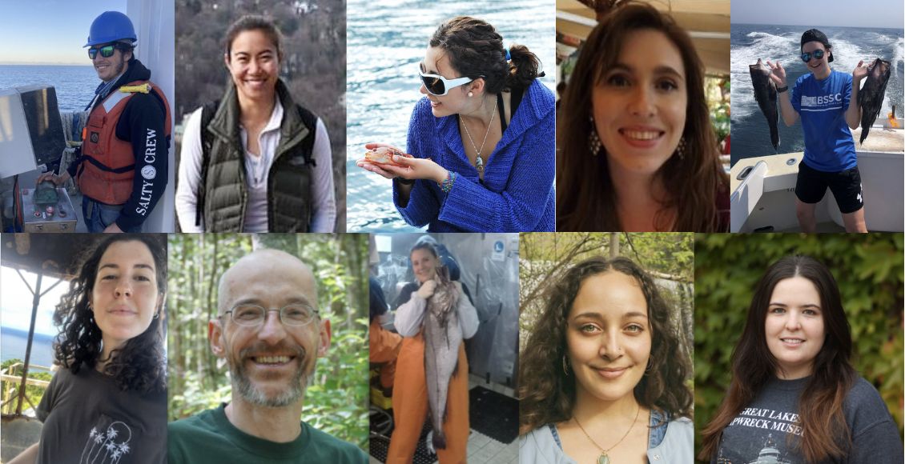

13 UMass Dartmouth, SMAST, and Fay Lab Resources
13.1 General information about UMass Dartmouth and SMAST
The SMAST directory lists all faculty and staff across both departments (DEOS & DFO). This is not updated frequently but may help you in locating a specific person and their contact information.
If you need help with a specific task, there are some staff members that are more appropriate to contact. Please use the link below to locate someone to help you. - [link to latest org chart]
General list of resources for SMAST staff and students via MyUMassD. This contains program policies, links, and forms for various academic and administrative procedures.
13.1.1 University Codes of Conduct
13.1.2 For Grad Students
- Official SMAST webpage for current and incoming students. This has information on orientation materials, forms, scholarships/fellowships/assistantships, and academics.
13.1.3 For Employees
13.2 Fay Lab Resources
- Fay Lab website
- Fay Lab Google Drive & Calendar - ask Gavin for a link to access & collaborate!
- Lab email -> thefaylab@gmail.com
- Fay Lab GitHub account
- Lab-chat repository houses an Issues list that retains institutional and Fay Lab knowledge. It’s private so be sure to ask Gavin for access!
- Our current team
- Lab publications
- Professional development materials: collection of issues in the lab-chat
- Travel Procedures
13.2.1 Weekly Lab Meetings
- Every Monday from 12:30 - 2:00 PM ET
- Lab Meeting Schedule
- On occasion, this time is used for Quantfish woRkshops where lab members or invited guests come to teach the group and larger community a quantative skill (could be an introduction to a new R package, new statistical tool, etc).
The below are not currently in session, but are examples of regular activities we have run in the past.
13.2.2 Shut Up and Write
- Every Thursday from 3 - 4:30 PM EST (besides the 1st Thursday of every month which is reserved for Hacky Hour -> see below!)
- Pomodoro-style workflow. Three, 20-minute sessions interspersed by ~5 minute breaks.
13.2.3 Hacky Hours/Southcoast useR group
- 1st Thursday of every month
- Mixed bag including working through tidy tuesdays, informal feedback presentations, etc.
